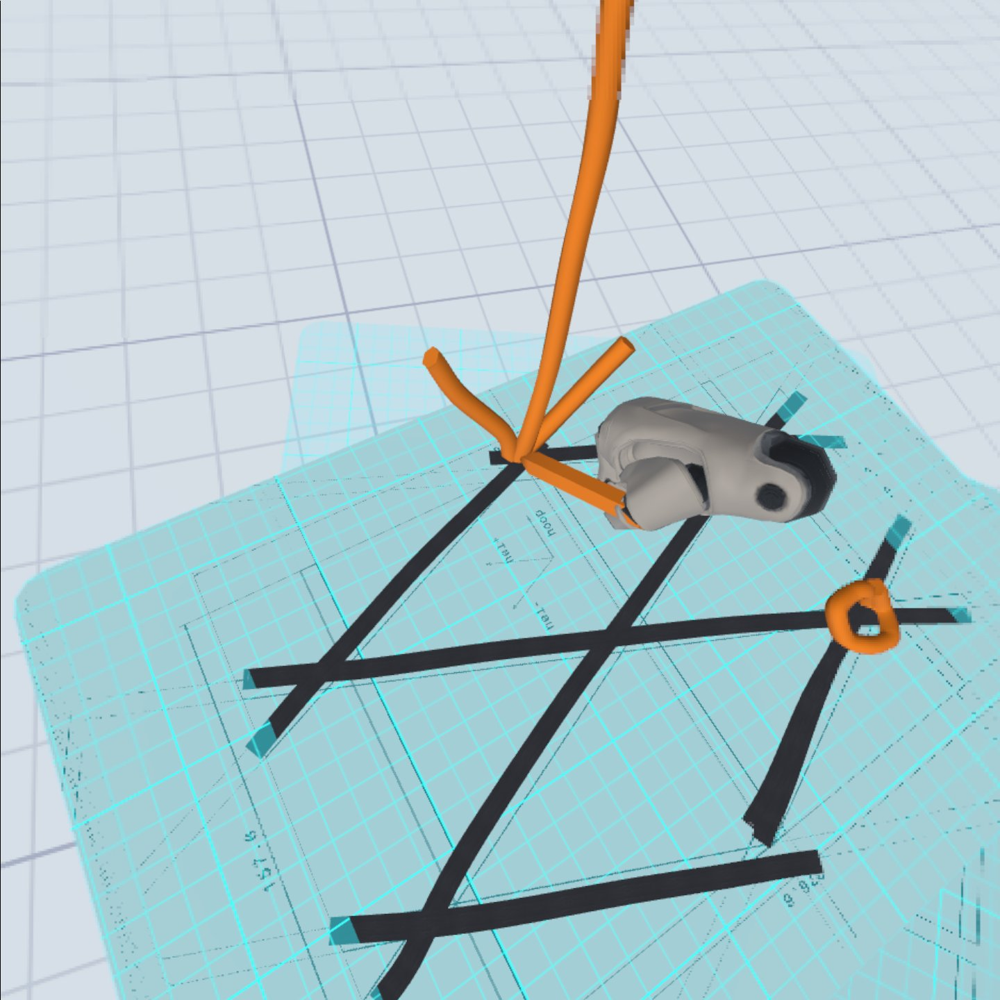
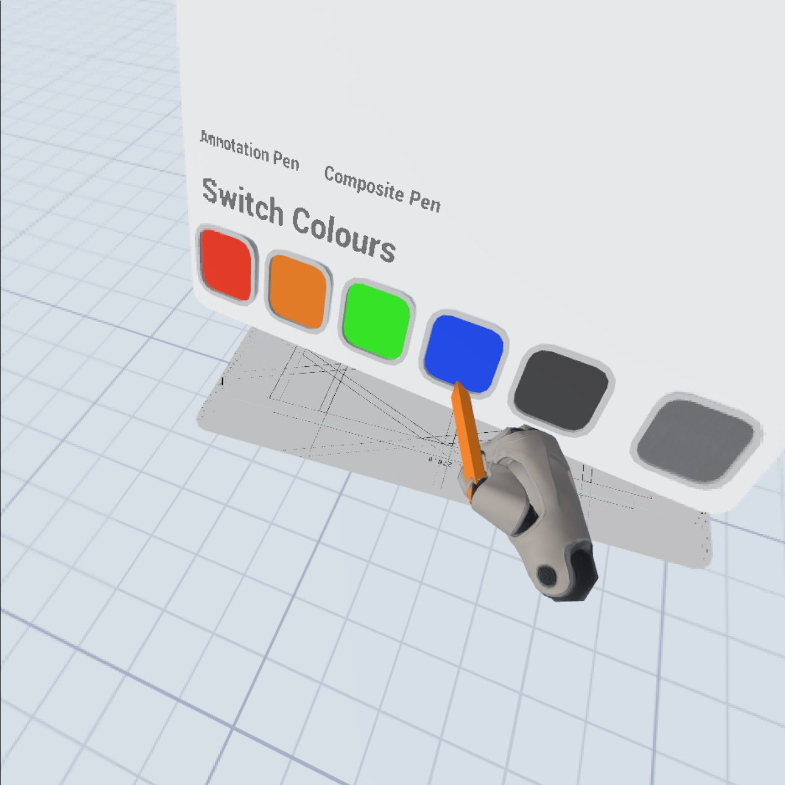
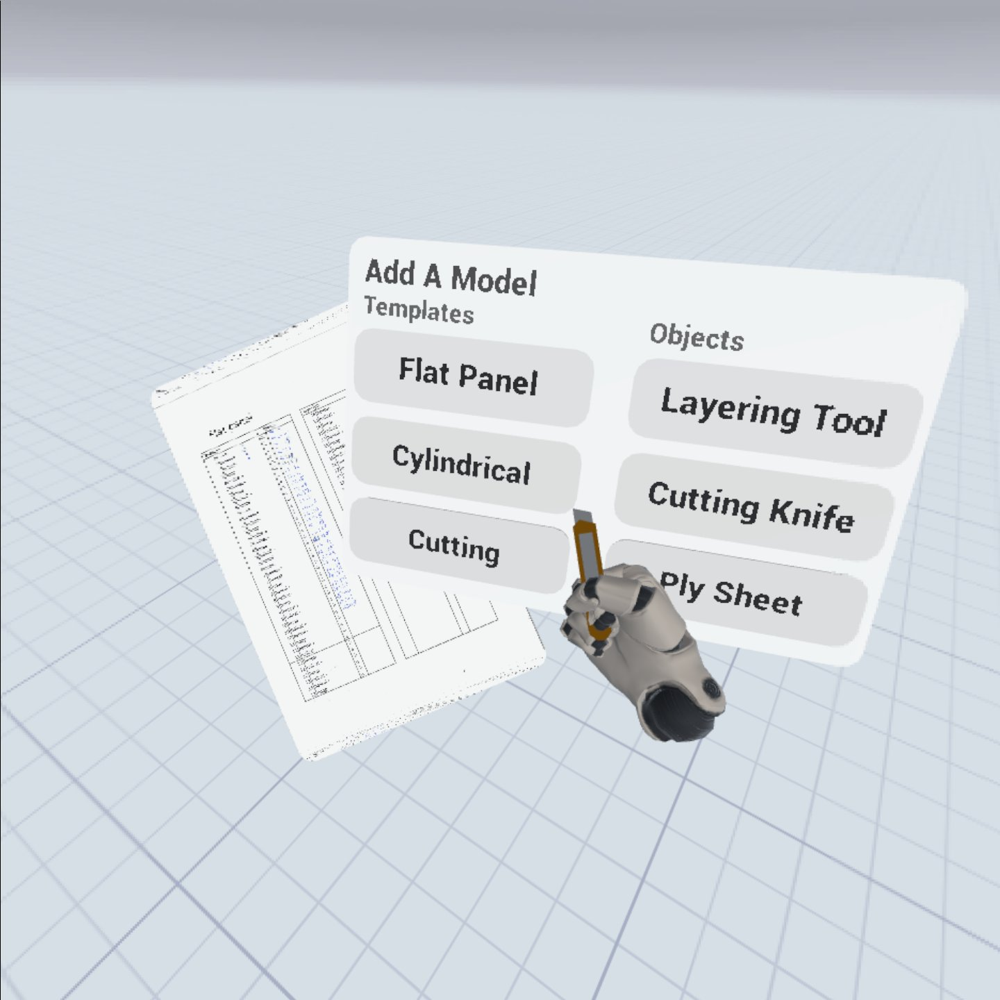
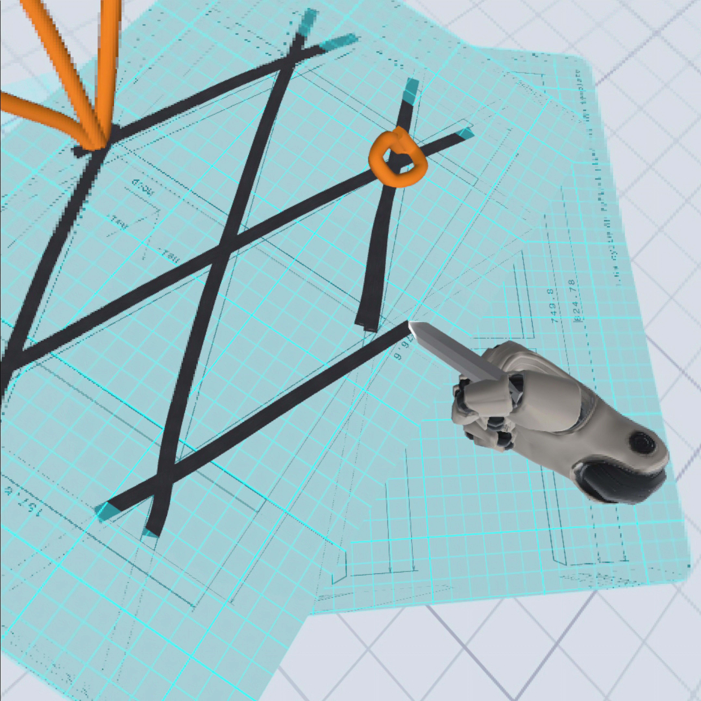
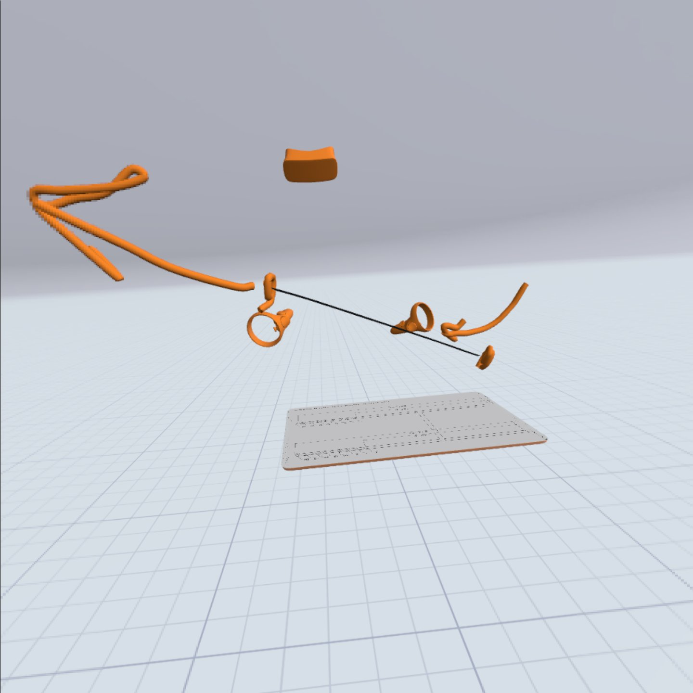

VR Lay-up Recorder
Remote coworking tool that enables communication on complex production techniques
Graduate Intern (Sep 2019 - June 2020) at ATG Europe
At ATG Europe, I worked on improving collaboration between Dutch engineers and the Irish production team, who faced challenges due to differences in theoretical and practical knowledge. Frequent travel between the teams resulted in lost information and environmental impact. To tackle this, I began with a literature review on Mental Models, Common Ground, and collaboration tools, then immersed myself in the production process. This led to the development of the Knowledge Recorder, a VR tool I created to capture and organise workflows visually using sketches, voice, and 3D interactions, supporting asynchronous collaboration. The tool proved intuitive and effective, reducing travel and ensuring no details were lost.
 Read full report
Read full report
The project in short
The problem
ATG Europe, a space engineering company based in Noordwijk, Netherlands, primarily undertakes projects for the European Space Agency while also developing products like grid-stiffened composites. The company has separate engineering and production teams in the Netherlands and Ireland, respectively, which lead to challenges in remotely establishing a shared understanding of problems due to differing theoretical and practical knowledge. To improve collaboration, Dutch engineers frequently travelled to Ireland, but this reliance on travel resulted in lost information and significant environmental impact. Thus, ATG needed a tool to minimize the need for such frequent flights.
The process
The project began with a literature review covering Mental Models, Common Ground, Virtual Reality (VR), and collaboration tools, forming the theoretical foundation. A contextual analysis followed, identifying gaps in the researcher’s understanding of composite production and collaboration tools used at ATG. Immersion in the production process and interviews led to insights that a traceable, high-bandwidth collaboration tool was needed, presenting an opportunity for VR. Based on these insights, a conceptualisation phase generated requirements and interaction visions, resulting in a concept direction for a VR tool to capture and organise Mental Models. A prototype was developed using the RITE method for iterative development. The final prototype was evaluated, showing promising results in clarity and experience compared to traditional methods.
The solution
The final tool, the Knowledge Recorder, is a VR system that helps teams capture and share complex processes visually. It lets users record their workflows, including sketches, voice, and 3D interactions, all organized in a clear, step-by-step format. Designed to make sure no detail gets lost, the tool supports asynchronous collaboration, so teams can review and build on each other's work whenever needed. Developed through several rounds of testing, the focus was on making it intuitive and easy to use, ensuring that everything recorded stays accessible and easy to follow.
Tailor-made for lay-up production
Show and tell
Get the efficiency and ease of explaining your thinking process using your voice and your physical presence. And support by illustrating the problem using a robust set of sketching tools and models



Explain Lay-up Anywhere
The VR tool is optimised to make an explanation of composite lay-up as easy as possible. Use the alignment sheet to do lay-up on your models and templates. Draw over the models, and show that in motion. Best of all you can do it from home

Makes knowledge traceable and accesible
Keep it in traceable steps
Capture your process in convenient short steps, that are kept as a single resource, so you can find the right information and revision easily. No more incredibly long documents, or disparate emails, about every small step in the process, a recording shows it all more clearly and more comprehensively. Then watch it back anytime, no meetings required.

Record in motion
Capture and explain the details and motions of your process in a detail not before possible in a very efficient manner. Capture your presence in the process.
Interactive Playback
Watch it whenever, no meetings required and traceable until forever. Pause an explanation at any time, then take apart any sketch and model to dig deeper


A design and development project in one
Being both a designer and a developer was a major advantage in this project. It allowed me to bridge the gap between design and execution seamlessly. I crafted user-centered experiences while directly implementing them, enabling quick iterations based on feedback. This integration ensured that the final tool was both visually engaging and technically robust, resulting in a cohesive and effective solution.
Key skills used
UX Designer
As a UX Designer, I applied my skills by conducting user research to identify needs and pain points. I translated these insights into clear user requirements and created intuitive workflows. Through rapid prototyping and iterative testing, I refined the design based on user feedback, ensuring a solution that prioritised usability and effective information sharing.
Unreal Engine Developer
As a developer, I translated design concepts into a functional VR tool, focusing on both technical and interaction aspects. I used my programming skills to create a framework for recording and organizing 3D interactions, sketches, and voice recordings. This involved coding features for object manipulation in virtual space and ensuring easy data retrieval for asynchronous review. I iterated on the implementation, refining performance and usability based on testing feedback, balancing technical functionality with design intent to ensure the tool was reliable and user-friendly.